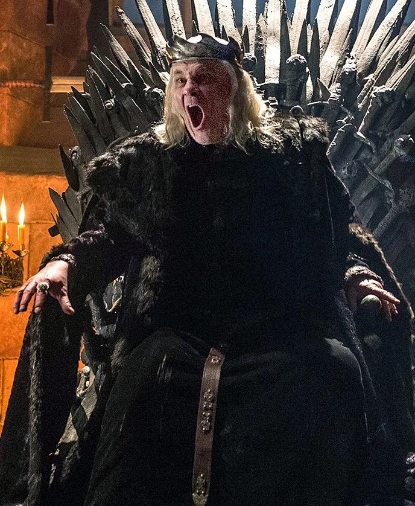
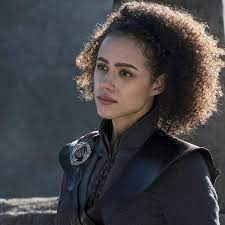
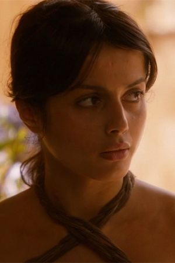
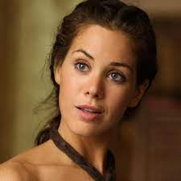

La ciudad capital de los Siete Reinos, localizada en la costa este de Poniente, en la bahía de Aguasnegras, Desembarco del Rey es la sede del Trono de Hierro en la Fortaleza Roja.
Casa Targaryen
Lema: Fuego y Sangre (Fire and Blood)
Ubicación: King's Landing (Desembarco del Rey)

Los Targaryen poseían dos espadas bastardas de acero valyrio: Fuegoscuro (empleada por Aegon) y Hermana Oscura. Estas dos espadas ancestrales (actualmente en paradero desconocido) fueron traídas por los Targaryen desde Valyria hasta Rocadragón antes de la Maldición. Tras siglos viviendo en la isla de Rocadragón, Aegon Targaryen y sus hermanas gobernaron Poniente durante casi 300 años hasta la Rebelión de Robert gracias a la ayuda de sus dragones. Cuando Robert Baratheon y Ned Stark encabezaron una rebelión para deponer al rey Aerys, éste fue asesinado por Jaime Lannister y Robert tomó posesión del Trono de Hierro. Los dos hijos supervivientes de Aerys (Daenerys y Viserys) se vieron obligados a exiliarse a Essos.

Aerys Targaryen: Último Rey Targaryen que gobernó sobre Poniente. Aerys II perdió su nombre para ser conocido por toda la población como El Rey Loco. Es asesinado por Jaime Lannister quien lo apuñala por la espalda.

Rhaegar Targaryen: Hijo y heredero de Aerys II Targaryen. Se divorció de Elia Martell, para casarse en secreto con Lyanna Stark. Rhaegar muere combatiendo en la batalla del Tridente a manos de Robert Baratheon

Viserys Targaryen: Fue el segundo hijo del rey Aerys II Targaryen. Arregló el matrimonio de su hermana Daenerys con Khal Drogo. Obsesionado toda su vida con recuperar el Trono de Hierro, lo que le ha llevado a deambular por todas las Ciudades Libres hasta quedarse sin dinero, por lo que es apodado como «El Rey Mendigo». Amenaza a Daenerys con matar al hijo que lleva en el vientre si Drogo no le da la corona que le prometio. Drogo exclama que le otorgará esa corona; en ese momento, sus jinetes de sangre inmovilizan a Viserys, mientras Drogo vuelca un caldero de oro fundido sobre su cabeza, matándolo

Daenerys Targaryen: Se convierte en la heredera de la dinastía Targaryen tras el asesinato de su hermano y planea reclamar ella misma el Trono de Hierro, considerándolo su derecho de nacimiento. Daenerys, embarazada, pierde a su marido Khal Drogo y a su hijo, pero la magia de la sangre le permite incubar tres de sus huevos de dragón, Viserion, Rhaegal y Drogon. Se convierte en Daenerys de la Tormenta, la Primera de su nombre, Reina de Meereen, Reina de los ándalos, los rhoynar y los primeros hombres, Señora de los Siete Reinos, Protectora del Reino, Khaleesi del Gran Mar de Hierba, La que No Arde, Madre de Dragones. Daenerys Targaryen muere asesinada a manos de Jon Snow en la sala del trono, tras ejecutar un verdadero genocidio en Desembarco del Rey y llegar al Trono de Hierro.

Khal Drogo: Hijo de Khal Bharbo, lo que lo convirtió en el khalakka (heredero en el idioma dothraki ficticio de la saga) de su padre y de su khalasar (su tribu). Es un Khal temido y respetado. Drogo quedá mal herido después de un enfrentamiento con Khal Ogo. Pero pese a los cuidados de la mujer, Drogo siguió empeorando y pronto cayó de su caballo, símbolo para los Dothraki de que ya no podía seguir liderándolos, Daenerys le pidió a la maegi que sanara a su esposo a cambio de la vida de su hijo nonato. Tras un ritual con magia de sangre, Daenerys descubre que ha perdido al niño que esperaba y a Drogo en estado catatónico. Incapaz de devolver a la normalidad a su marido, y de verlo en ese estado, Daenerys asesina a Drogo asfixiándolo con una almohada.

Viserion: Es el más cariñoso y mimado de los tres dragones, también el más confiado. Sus escamas son de color crema, duras y fuertes. Sus cuernos, huesos de las alas y columna vertebral son de color dorado, al igual que sus ojos. Su llama es de color oro pálido plagado de rojo y naranja. Se dice además que su rugido puede enviar a un centenar de leones corriendo. Sus dientes son de color negro brillante. Viserion es asesinado con una lanza de hielo por el Rey de la Noche, hundiéndose en las frías aguas del lago congelado. Poco después el Rey de la Noche lo revive como espectro y lo convierte en su montura para derretir el Muro y avanzar hacia el sur.

Rhaegal: Es el más pequeño y perezoso de los tres dragones, pues siempre está enroscado y durmiendo plácidamente. Sus escamas son de color verde y bronce, al igual que sus ojos. Su llama es de un fuego amarillo-naranja atravesado por vetas de color verde. Sus dientes y garras son negros. Mal herido, por la llamada "Danza de Dragones" donde muere su hermano ahora caminante blanco Viserion, llega volando a Rocadragón donde es embestido por tres lanzas gigantes propulsadas por Euron Greyjoy quien los esperaba con su flota desde un punto de la isla. Después de esos tres impactos, Rhaegal cae muerto al mar, ante la mirada atónita de su madre.

Drogon: Es el más grande y agresivo de los tres dragones. Sus escamas son negras, duras y fuertes. Sus cuernos y columna vertebral son del color de la sangre y sus ojos son de un rojo ardiente. Su llama es de color negro con vetas rojas. Se dice además que el calor de su fuego puede sentirse a treinta metros de distancia. Su aleteo suena como una tormenta y su sangre es negra y espesa. Drogon llega al salón del trono de hierro, donde se encuentra con su madre Daenerys, luego de que Jon Snow le clavara una espada en su corazón. Drogon al darse cuenta de que su madre esta muerta, devastado, derrite con sus llamas el Trono de Hierro; para después llevarse su cadáver entre sus garras.

Gusano Gris: Inmaculado comprado y liberado por Daenerys Targaryen en Astapor. Luego de su liberación fue elegido como comandante de los Inmaculados al servicio de Daenerys y se convirtió en uno de los consejeros de confianza de la reina.

Missandei: Antigua esclava que se convierte en doncella, traductora y compañera leal de Daenerys Targaryen. Es originaria de Naath. Muere decapitada a manos de la Montaña por orden de Cersei Lannister

Irri es una de las doncellas de Daenerys Targaryen. Originalmente era parte de un khalasar rival que fue derrotado por Khal Drogo. Fue tomada prisionera y entregada a Daenerys como regalo de bodas. Fue regalada para enseñarle a Daenerys cómo montar a caballo. Es asesinada en Qarth por Xaro Xhoran Daxos cuando éste quiere robarle los dragones a Khaleesi.

Doreah fue una de las doncellas de Daenerys Targaryen. Fue entregada a Daenerys como un regalo de bodas de parte del magíster Illyrio Mopatis a través de Viserys Targaryen. Es encerrada en el túmulo valirio por traición a su reina.-